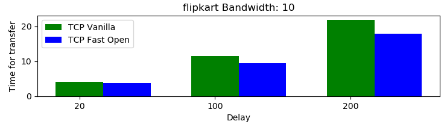
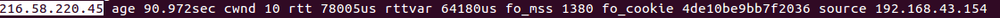

TCP Fast Open Experimentation
Using Mininet
This project shows the efficiveness of TCP Fast Open over Vanilla TCP by experimenting with parameters like bandwidth and delay on various websites like Amazon, Flipkart and Myntra in the Mininet Network simulator. This project was inspired by the work done by the students of the CS244 course at Stanford [1].
Introduction
Most connections are short-lived with only a few RTTs, thus the handshake forms a significant overhead cost. In modern webpages, we see a trend of larger webpages consisting of many relatively smaller web objects and resources. To load each site the browser must initiate tens or even hundreds of independent TCP connections with various servers and content providers.
There is a 1 RTT delay introduced for each vanilla TCP connection before clients and servers can start exchanging data. With TFO we can now reduce this delay to zero such that requests can be sent along with the initial SYN packet from client to server, and servers can immediately send response data back with their SYN-ACK packets.
This idea seems simple, but having servers send data before establishing a full connection allows malicious users to conduct amplified DDOS attacks by making GET requests with spoofed source IP addresses. The RFC proposes a solution to this issue by making use of security cookies.

Credits : https://reproducingnetworkresearch.wordpress.com/2017/06/05/cs244-17-tcp-fast-open/
Steps involved in the project
Platform
We use Google Cloud’s VM instances. The entire setup is reproducible, though there will be a few small differences in PLTs due to differing loading times of mininet. One parameter of the setup that will affect reproducibility the most is not using Ubuntu 14.04. The scripts for installing the dependencies for mget will not work if Ubuntu 14.04 is not used. Ubuntu 14.04 was used because we ran into early troubles with Ubuntu 16.04 and installing mininet/mget in specific ovs-controller installation . In addition, Ubuntu 14.04 has Linux kernel version 4.4, which is higher than TFO’s requirement of Linux kernel version 3.7.
Results and Inferences
1) GET
As we expected TFO performed significantly better than Vanilla TCP, find below the results for amazon and flipkart websites. The time taken to load is different for different websites because of the varying sizes of the webpage.The performance improvement scales well with increase in bandwidth. This implies that users with higher bandwidth will benefit more from TFO. We observed a peak performance improvement of 30% in wikipedia TCP page at a bandwidth of 10 Mbps.



For a detailed results click here.
{kind=link}
2) POST
While TFO is motivated by Web applications, the browser should not use TFO to send requests in SYNs if those requests cannot tolerate replays. One example is POST requests without application-layer transaction protection (e.g., a unique identifier in the request header).There is no special handler for POST requests in TFO. When a TFO POST request comes in, the kernel automatically takes it as a normal TCP connection. The results of the same can we be viewed below i.e there is no improvement.

Inferences
1) From our experiments we found that TCP Fast Open was especially useful for website visitors who are a great distance away from the origin server therefore increasing round trip times.2) We also observed that the page load time (HTTP GET requests) of TFO over Vanilla TCP improved as the size of the webpage increased and as the bandwidth increases.
3) But there was no improvement on using TFO when a HTTP POST request (Uploading a file) was given to the the server.
4) We also observed that our PLTs are significantly larger than the ones in the paper for amazon.com. We believe that this is reasonable given that the paper was published in 2011, and the sites mentioned likely had much slimmer pages.
Challenges faced
1) openvswitch-controller isn't supported on Ubuntu 16.04 and we couldn't deploy mininet on our machines. Our project had to be completely moved onto Google Cloud servers.2) The documentation for the CS244'17 TFO project code was very minimal.
3) The project initially used SimpleHTTPServer which does not support POST requests.It only supports GET requests. We used BaseHTTPServer (which is the base class for SimpleHTTPServer) instead and wrote POST and GET handling requests from scratch.
4) There was some difficulty in using the curl command (for POST requests) on mininet. On changing the IP address of the hosted website we got the curl command to work properly on mininet.
What does a TFO cookie look like??
After enabling TFO (Find out how here ) on a terminal run the following command to see what a TFO cookie looks like.

Observe the fo_cookie field, it confirms that our communication with the IP address (216.58.220.45) in the beginning of the line used TFO.
From our experimentation we confirm that Google and AWS websites support TFO requests.
Resources
[1] https://reproducingnetworkresearch.wordpress.com/2017/06/05/cs244-17-tcp-fast-open/.
[2] Sivasankar Radhakrishnan, Yuchung Cheng, Jerry Chu, Arvind Jain, and Barath Raghavan. 2011. TCP fast open. In Proceedings of the Seventh COnference on emerging Networking EXperiments and Technologies (CoNEXT '11). ACM, New York, NY, USA, , Article 21 , 12 pages. DOI=http://dx.doi.org/10.1145/2079296.2079317.
[3] https://tools.ietf.org/html/rfc7413.
[4] https://reproducingnetworkresearch.wordpress.com/2016/05/30/cs244-16-tcp-fast-open/.